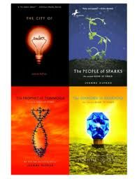
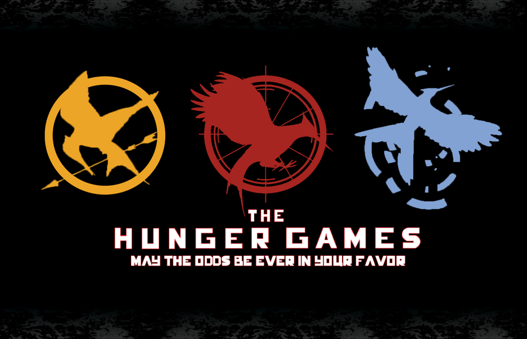

When it comes to school, I read a countless amount of books, whether I want to or not. Outside school, however, I don't really read much, as I am wearied out from reading school-related things. However, I still have some "favorite" books. Some include the first two books of the Hunger Games series, The Hunger Games and Catching Fire. I haven't read Mockingjay yet because don't have a lot of time. Other books include every book in the City of Ember series, The City of Ember The People of Sparks, The Prophet of Yonwood, and The Diamond of Darkhold. Other than these books, I don't really have other favorites. Maybe if I had more time on my hands, I would be able to read a lot more books.
 